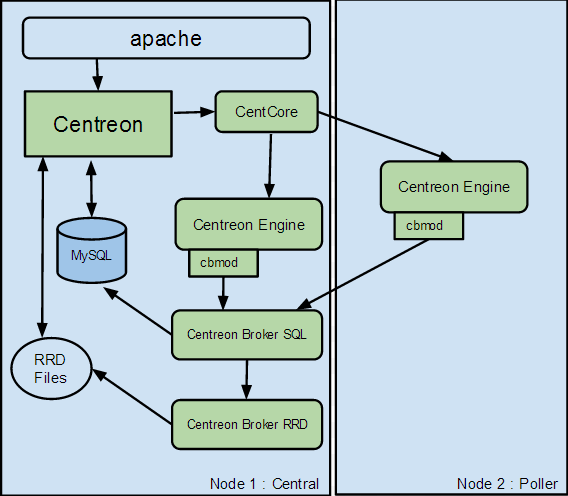

Distributed architecture¶
Description¶
The distributed architecture is to have two types of entities:
- A central Centreon server to display information
- One or more remote servers to collect data
The central Centreon server includes the following items:
- Centreon web interface
- Databases (MySQL + RRD)
- Monitoring Engine
- Broker
The remote servers include the following items:
- Monitoring Engine
- Broker module to forward collected data to a central broker
This architecture is used for:
- Enable load balancing across multiple remote monitoring servers
- Network streams isolation: if your monitoring architecture have to monitor a DMZ area, it is easier (and safe) to place a remote server in the DMZ network
Components¶
Central Centreon server¶
Many components are used to build a central Centreon server:
- Apache web server for Centreon web interface
- MariaDB databases to store Centreon configuration parameters as well as monitoring and performance data
- The Centcore process is used to send monitoring configuration to the remote server and to manage it
- A monitoring engine to collect data
- Collected data are sent to Centreon Broker SQL using cbmod by monitoring engine
- Centreon Broker SQL allows to store information into MariaDB databases and forward them to Centreon Broker RRD
- Centreon Broker RRD generates and updates RRD files with data in order to display performance graphs
Remote monitoring server¶
Many components are used to build a remote server:
- A monitoring engine to collect data
- Collected data are sent to Centreon Broker SQL using cbmod by monitoring engine
- Centreon Broker SQL allows to store information into MariaDB databases and forward them to Centreon Broker RRD
- Centreon Broker RRD generates and updates RRD files with data in order to display performance graphs
Architecture¶
The diagram below summarizes the architecture:
